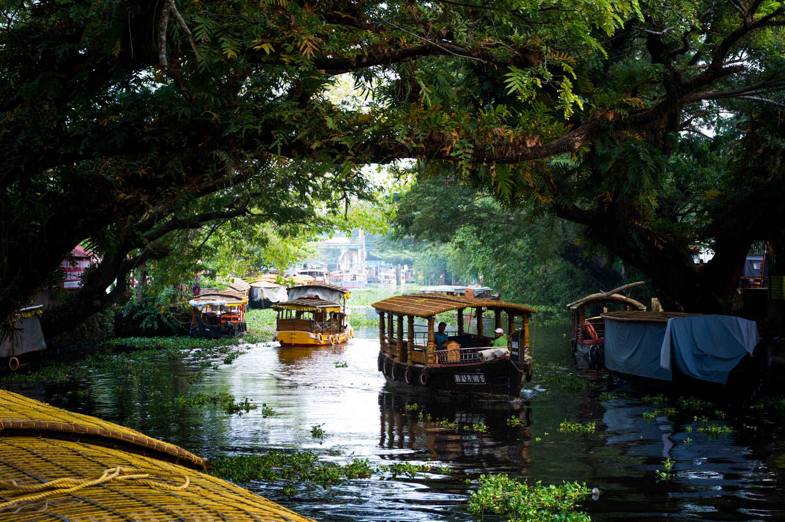

Alleppey: The Venetian Heart of the South
Alleppey is a network of lagoons, canals, and lakes known as the Kerala Backwaters. Life here moves with the rhythm of the water, where houseboats glide past coconut groves and green rice fields.
In 2026, Alleppey is the center of "Liquid Leisure." Travelers drift across Vembanad Lake on traditional houseboats, experiencing a peaceful rural life shaped entirely by the waterways.

The Kettuvallam: Architecture on Water
History: Traditional rice barges once used to transport spices and rice across Kerala.
Environment: Converted into floating villas with bedrooms, kitchens, and sun decks while keeping bamboo and thatched designs.
Culture: Local crews navigate, cook, and share stories of backwater life with travelers.
The Village Life: Islands of Tradition
History: Communities live on reclaimed land below sea level in the Kuttanad region.
Environment: Water-based life where children commute by boat and vendors sell goods from canoes.
Culture: Famous for Snake Boat Races (Vallam Kali), where massive boats with over 100 rowers race through canals.
Vembanad Lake: The Great Expanse
History: The largest lake in Kerala and the longest in India, connecting the backwater canal network.
Environment: A biodiversity hotspot with migratory birds and the famous Pathiramanal Island.
Culture: Traditional fishing methods like Chinese fishing nets define the lakeside communities.
The Flavors of the Backwaters
Backwater cuisine focuses on fresh fish, coconut, and farm-to-table ingredients.
Karimeen Pollichathu: Pearl Spot fish marinated in spices, wrapped in banana leaf, and fried.
Kerala Red Rice (Matta): Nutritious rice variety served with coconut-based curries.
Appam with Vegetable Stew: Bowl-shaped rice pancakes served with coconut milk stew.
Toddy (Palm Wine): Fermented coconut sap served in local toddy shops.
Banana Fritters (Pazham Pori): Deep-fried banana snack enjoyed with tea during sunset.